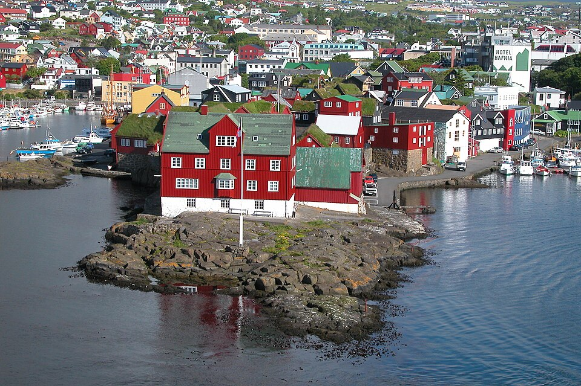
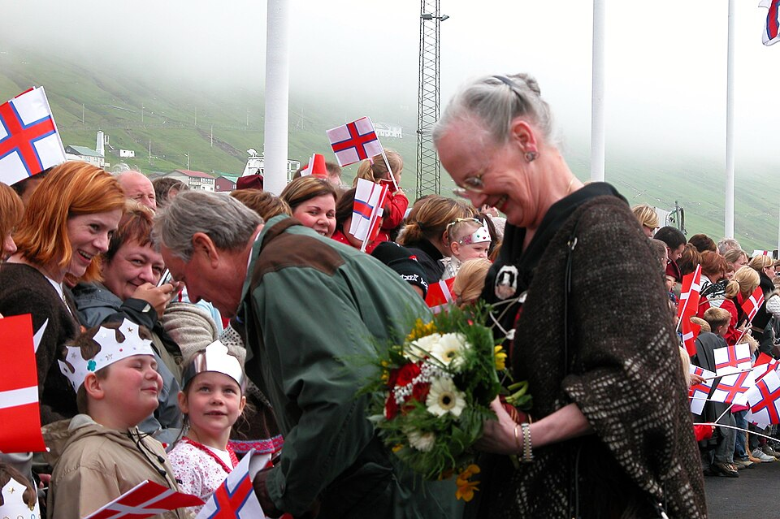

🏔️ Pyrenees — Throne of Granite & Legend
📖 Chapter I: The Kingdom of Granite and Ice
Imagery description: Gazing at the Pyrenees from above, you see a colossal wall stretching 491 km. Peak Aneto (3,404 m) crowns ancient granite. Valleys weep with the Gavarnie waterfall (462 m) and stone cirques — a theatre of gods.
📖 Chapter II: Climate Wall & Life’s Contradictions
West: humid, dense forests. East: dry, barren granite. Snow line: 2,700–2,800 m. Mediterranean flora meets central European. The endemic Xatardia grows only on one high pass.
📖 Chapter III: Sun Furnaces & Star Observatories
Pic du Midi Observatory (2,877 m) since 1878 — its telescope disproved Martian canals in 1909. Odeillo solar furnace (3,500°C) with 63 heliostats, a dance of light.
📖 Chapter IV: Hidden Treasures & Unique Life
Iron, talc (Trimoun – Europe), “Grand Antique” marble used in Rome and the Louvre. Sulphurous hot springs. Endemic species: Pyrenean desman, Pyrenean brook salamander.
📸 Summit Gallery (images from /Pyrenees folder)






* Place images inside folder "Pyrenees/" as 1.jpg ... 10.jpg next to this HTML file.